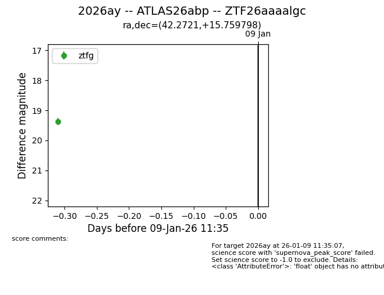
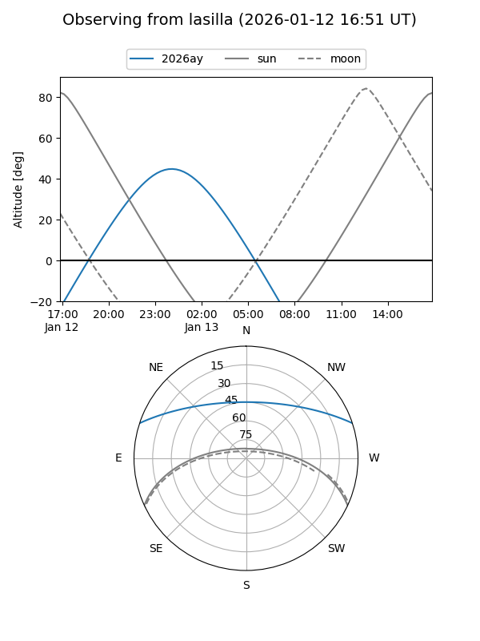
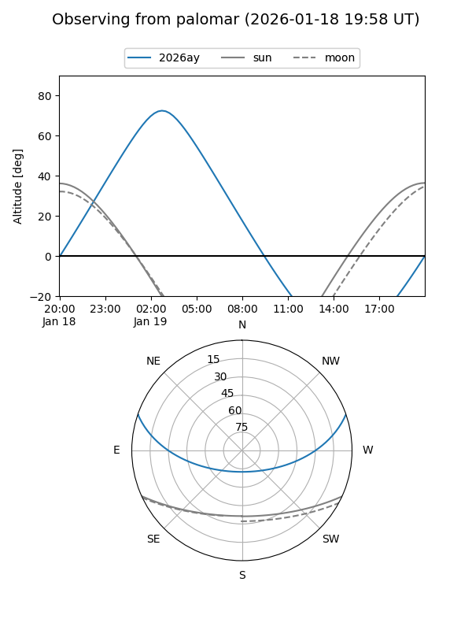
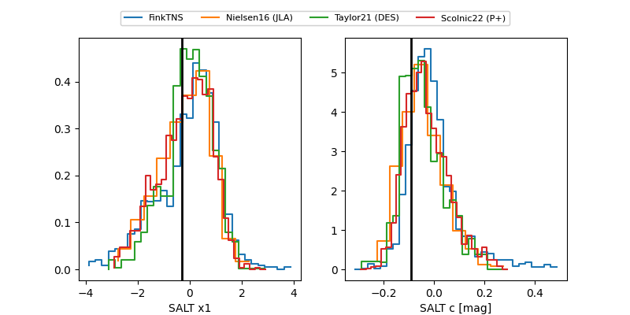

2026ay
Target 2026ay at 2026-01-09 11:36
Aliases and brokers:
FINK:
Lasair:
ALeRCE:
TNS:
YSE:
alt names
ZTF26aaaalgc (ztf,fink_ztf)
2026ay (tns,yse)
ATLAS26abp (atlas)
Coordinates:
equatorial (ra, dec) = 42.2721,+15.75980
equatorial (HMS+DMS) = 02:49:05.31,+15:45:35.27
galactic (l, b) = (160.0731,-38.48302)
Flags:
Photometry:
last ztfg=19.37
1 ztfg detections
Lightcurve

Visibility


Additional plots
